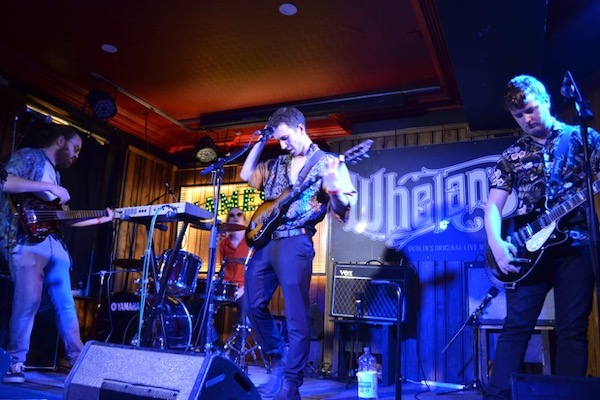

BEGINNINGS
The Vercettis began as a college project between Dylan Creedon, Turlough McGuinness, Peter Piggott and Colm Michael in 2016. Inspired by everything from Weezer to Dr. Dre, their distinct sound drew fans all over Cork.
They spent two years carefully writing and rehearsing their material before playing their first show, to a an audience of a whopping 12 people.
Having played their first gig, they then began planning their debut release, titled "Starfish Island".
STARFISH ISLAND
Their debut E.P. Starfish Island was released in January 2019, featuring songs such as Porno Star and You. The songs were noted for their idiosyncratic style and accompanying "humorous" videos. Colm wasn't actually involved in the recording process for this E.P. due to living in Berlin at the time, but he still likes to take credit for it.